Discography
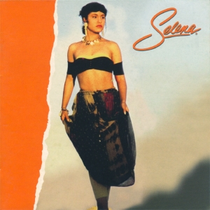
 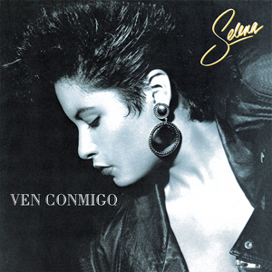
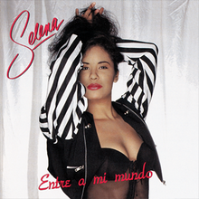
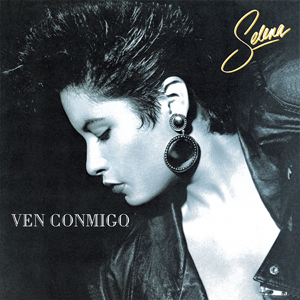
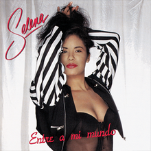
 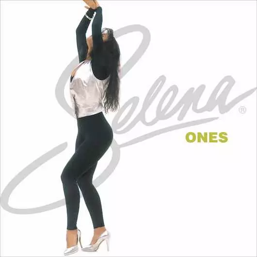
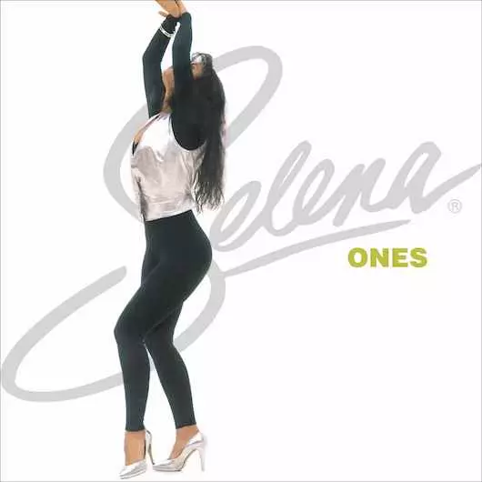
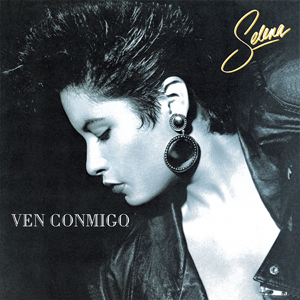
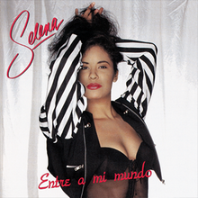
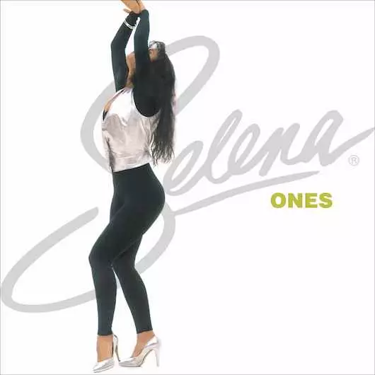
Selena Quintanilla Pérez (1971-1995) was a Mexican-American artist known as the Queen of Tejano Music. She remains a great inspiration for her musical talents, performances, and fashion.
Selena was raised speaking English, but was taught Spanish when she started her singing career. Hence, the immense adoration she received from English and Spanish-speaking communities.
Selena was active from 1981-1995 under the following labels: Q-Productions, Capitol Latin, EMI, Universal Music Latin, and SBK Records. She also worked in a variety of genres: Tejano, Mexican cumbia, mariachi, ranchera, Latin pop, and R&B.
Selena had a wonderful public image. Her personality and career choices made many look up to her as role model. For example, she believed education to be essential and had talks with students to encourage them to stay on the right path, and she contributed to many charities, programs, organizations, and shelters.
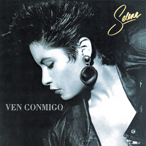
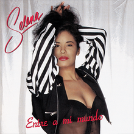
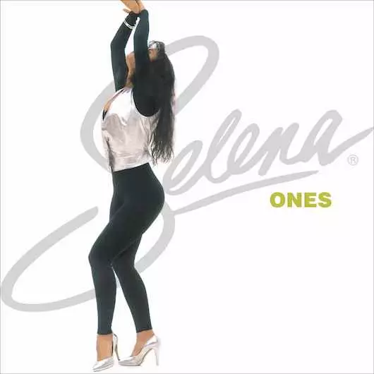
 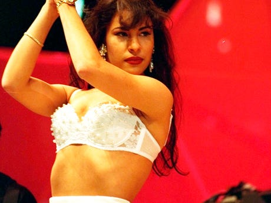
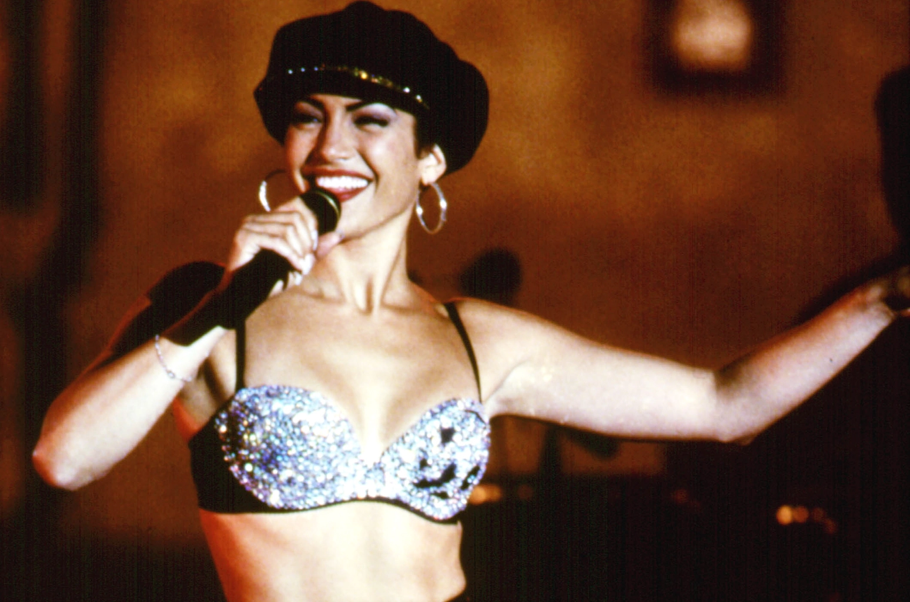
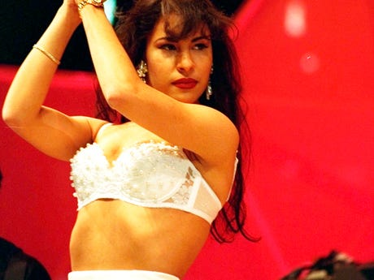
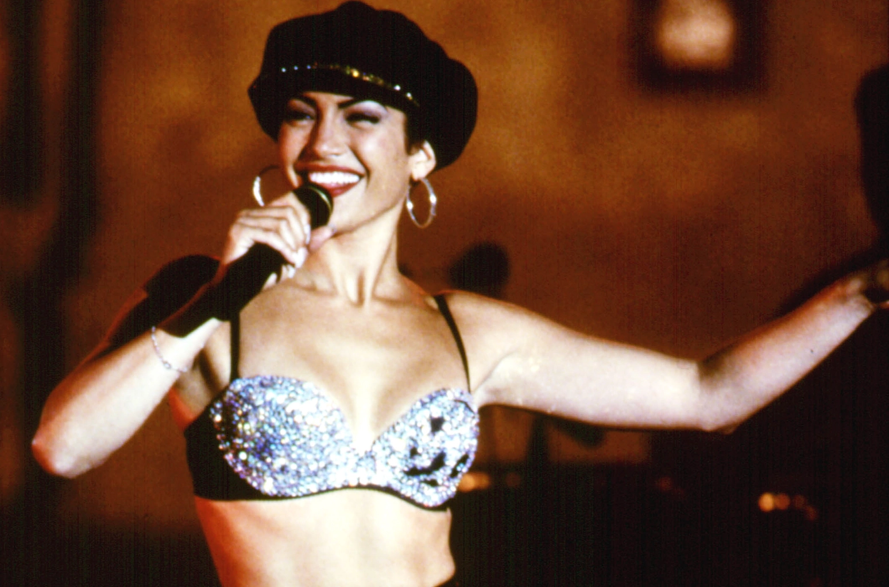
 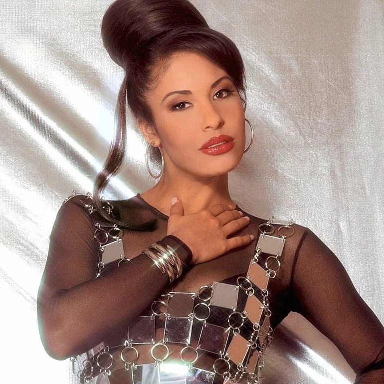
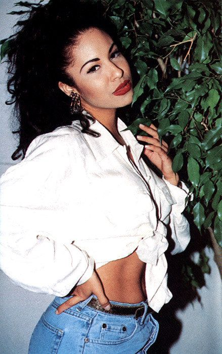
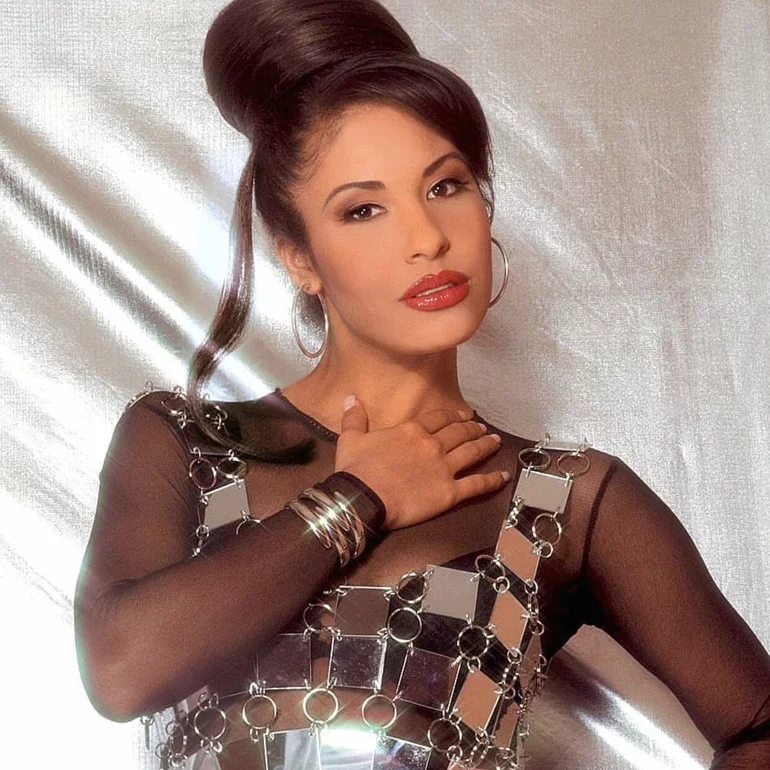
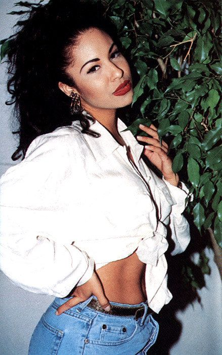